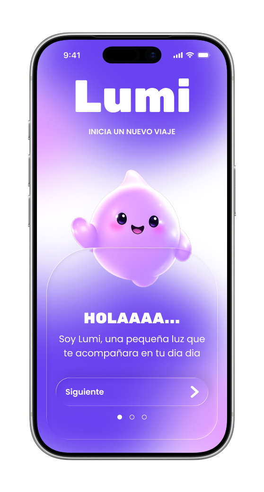
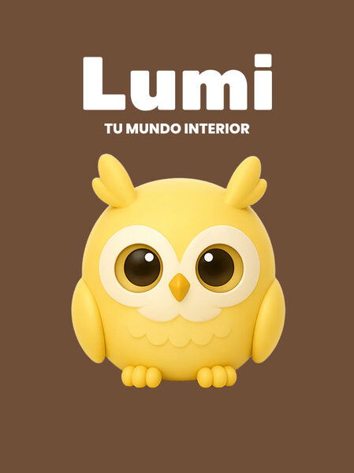
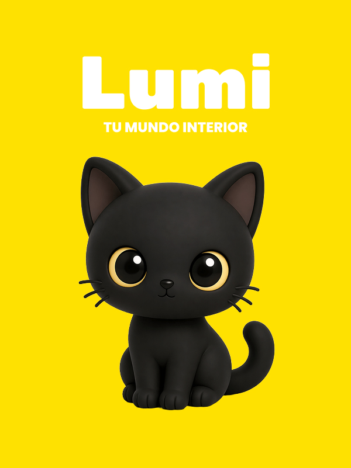
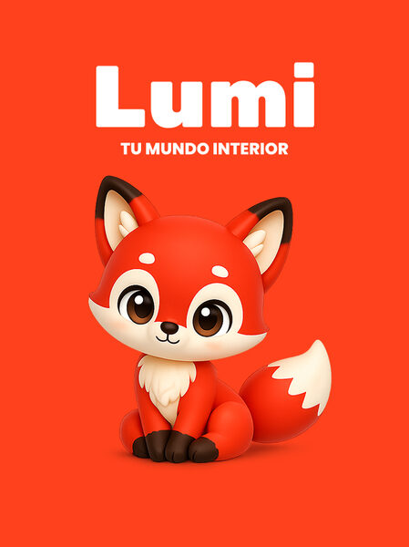
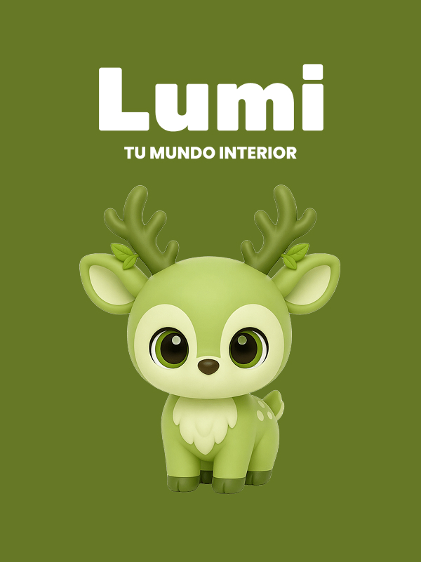

UX Research · Product Design · Prototipado
LUMI
Pontificia Universidad Javeriana
Aplicación de acompañamiento emocional y gamificación para jóvenes entre 18 y 25 años. Investigación con 5 usuarios, ideación, design system completo y prototipo navegable.
Product & UX/UI Designer
Research · Arquitectura de información · Prototipado
Herramientas
 Figma
FigJam
Figma
FigJam
Del problema al prototipo.
Un proceso de diseño centrado en el usuario que va desde la investigación cualitativa hasta un prototipo navegable completo en Figma, con un design system propio.
Identificación del Problema
5 entrevistas estructuradas con jóvenes de 18–25 años. Análisis de pain points, hallazgos y oportunidades de diseño.
Análisis y hallazgos — consolidación de insights cualitativos en patrones de comportamiento
Definición de criterios de éxito, métricas y alcance del MVP v1
Ideación y benchmarking — referentes como Habitica, Finch y Todoist
Arquitectura de información — flujos de usuario y mapa de navegación en FigJam
Design System
Paleta cromática, sistema tipográfico (Rubik One + Poppins), componentes glass y los 4 reinos con sus personajes.
Wireframes y prototipo navegable — 20+ pantallas en Figma, onboarding, home, registro diario y 4 reinos
Documentación y Entrega
Case study en Notion, flujos en FigJam y archivo de diseño completo con componentes
No es pereza. Es falta de acompañamiento.
Los jóvenes entre 18 y 25 años saben perfectamente qué deben hacer. El problema no es capacidad ni tiempo — es la ausencia de validación emocional en su rutina diaria.
"Los jóvenes no abandonan sus tareas por pereza — las abandonan por falta de validación emocional. La frustración viene de no sentirse vistos cuando logran algo."
5 voces, un mismo patrón.
Entrevistas estructuradas con preguntas fijas sobre actividades, frustración, organización y motivación. Todos querían lo mismo con sus propias palabras.
"Me motiva cuando alguien me felicita o reconoce mi esfuerzo."
"Que me diga qué hacer primero según mi energía y que me felicite cuando termino algo."
"Quiero un sistema que haga mis tareas divertidas y que me motive sin presionarme."
"Que me sugiera prioridades según cómo me sienta y me felicite cuando completo algo."
"Que haga la rutina más divertida y me acompañe de forma motivadora sin castigos."
Los usuarios no abandonan tareas por falta de voluntad. Las abandonan porque nadie les dice que su esfuerzo importa.
Ninguna herramienta actual se adapta a cómo se siente el usuario ese día. La organización existe, la adaptación no.
Una app que felicita genera más adherencia que una que solo registra. El lenguaje amable no es cosmético — es funcional.
Los usuarios quieren celebración, no presión de rachas ni comparación con otros. La gamificación funciona cuando es liviana.
Es el vehículo emocional que hace que el usuario se preocupe por su progreso sin que se lo pidan directamente.
Camila, Daniel y Laura. El mismo usuario.
El Joven
Estudiante / Trabajador
No completar tareas y sentir que pierde el tiempo
Herramientas que no lo motivan ni adaptan
No recibir reconocimiento por logros cotidianos
Acumulación de pendientes que genera estrés
"Completaré mis tareas diarias sintiéndome acompañado y motivado, sin que la app me presione ni me haga sentir mal si un día no puedo con todo."
¿Para qué abre LUMI el usuario?
Cuatro momentos reales en los que LUMI debe estar presente. Cada uno revela una necesidad emocional distinta.
Ayudarme a empezar cuando no tengo ganas
Cuando me levanto sin energía, quiero que algo me ayude a comenzar con al menos una tarea pequeña, para sentir que el día no se perdió.
Reconocimiento inmediato y visible
Cuando termino algo que me costaba, quiero recibir una celebración real, para sentir que mi esfuerzo valió la pena.
Solo lo que puedo hacer hoy
Cuando estoy agotado, quiero sugerencias adaptadas a ese estado, para no sentirme presionado ni fracasado.
Decirle cómo me siento al abrir la app
Cuando abro LUMI por primera vez, quiero hacer un check-in emocional, para que todo lo que me muestre tenga sentido con mi realidad.
La apuesta de diseño.
Si los usuarios registran su estado emocional al inicio del día y reciben tareas adaptadas a ese estado junto con retroalimentación positiva inmediata, completarán más tareas y se sentirán más motivados que con un sistema de listas tradicional.
La criatura como engagement — ¿El personaje aumenta el tiempo en la app? Validado por prueba de usabilidad.
Check-in emocional sin abandono — ¿El registro emocional no genera fricción en el onboarding? Validado por test A/B.
Recompensas simbólicas suficientes sin puntos numéricos — validado por encuesta post-sesión.
Qué existe y qué falta.
Tres referentes directos y por qué ninguno resuelve el problema completo de LUMI.
App de hábitos gamificada con sistema RPG. El mejor referente en gamificación de tareas. Convierte la productividad en un videojuego de rol completo.
App de autocuidado emocional con mascota virtual. Referente en acompañamiento emocional y cuidado del bienestar con una criatura como guía.
App de productividad con karma y puntos. Referente en organización eficiente de tareas con sistema de prioridades y retroalimentación numérica.
La oportunidad de LUMI: ningún referente combina adaptación emocional real con gamificación liviana y tono no punitivo. LUMI existe en esa intersección.
El lenguaje de LUMI.
Un design system cohesivo construido sobre un gradiente púrpura, cards frosted glass y personajes 3D cartoon. Cada decisión visual tiene una razón emocional.
¿Quién es Lumi?
Lumi es la criatura morada que acompaña al usuario en su día a día. No juzga, no presiona. Celebra los logros pequeños, entiende los días difíciles y convierte la rutina en algo con alma. Es el corazón emocional de la app.
Rubik One y Poppins.
Dos familias con roles claros. Rubik One para impacto y personalidad, Poppins para legibilidad y calidez en todos los pesos.

Cada criatura, un mundo emocional.
Los reinos organizan las tareas por dimensión de vida. El usuario selecciona máximo 2 por día, evitando la sobrecarga y respetando su energía real.

Lee 10 min · Pinta un cuadro · Escucha música nueva

Escribe cómo te sientes · Habla con alguien · Descansa sin culpa

Duerme 30 min · Ver una película · Salir a caminar

Tomar agua · Hacer ejercicio · Ordenar el cuarto